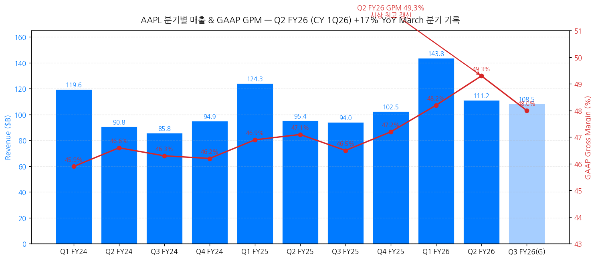
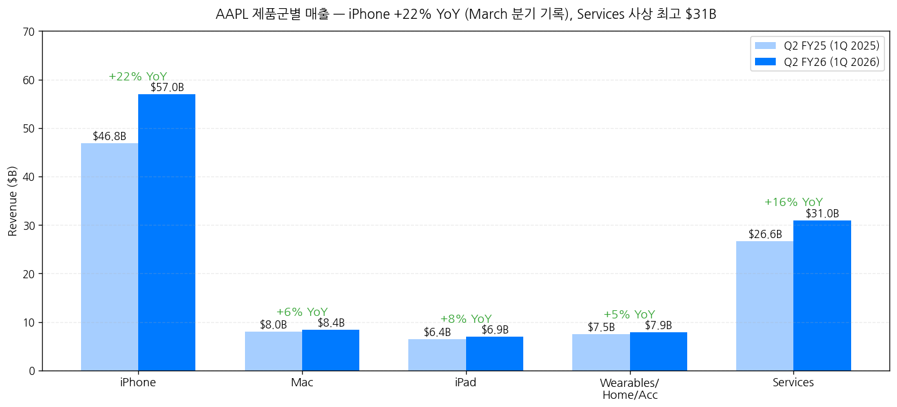
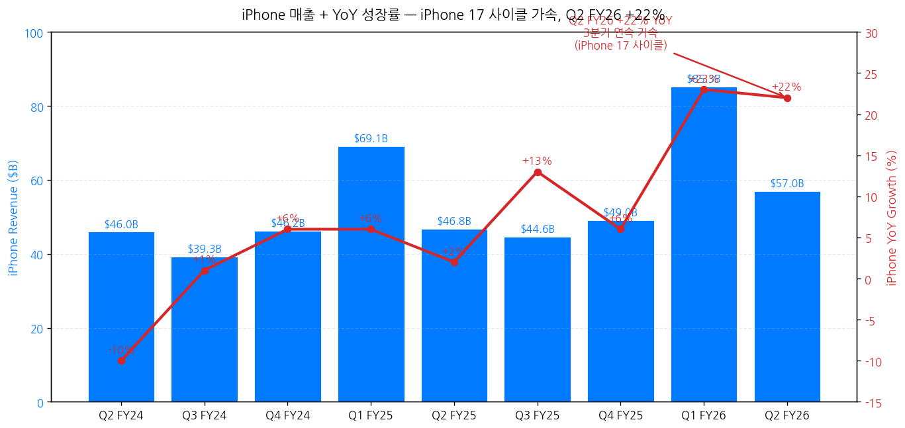
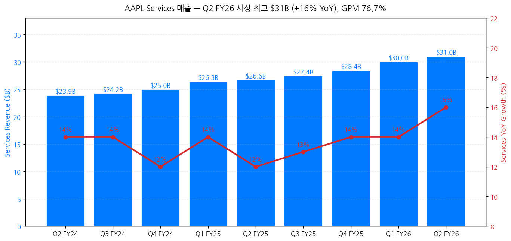
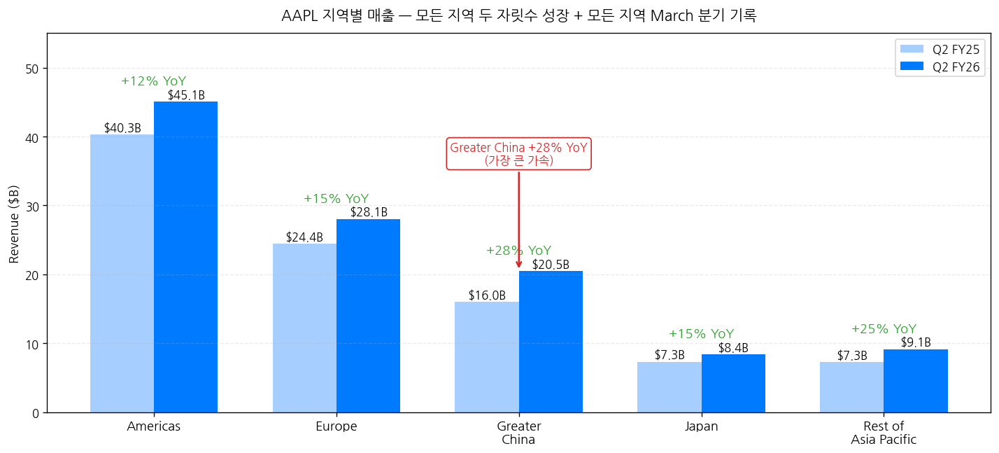
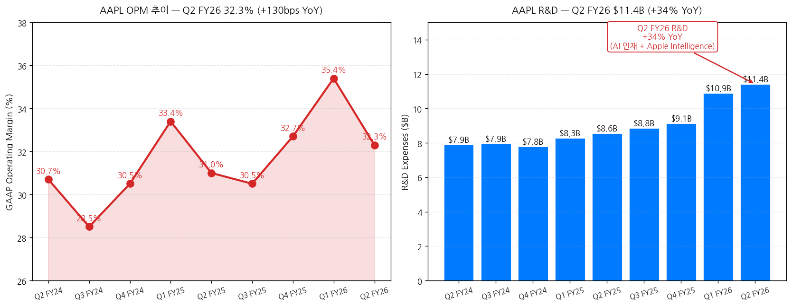
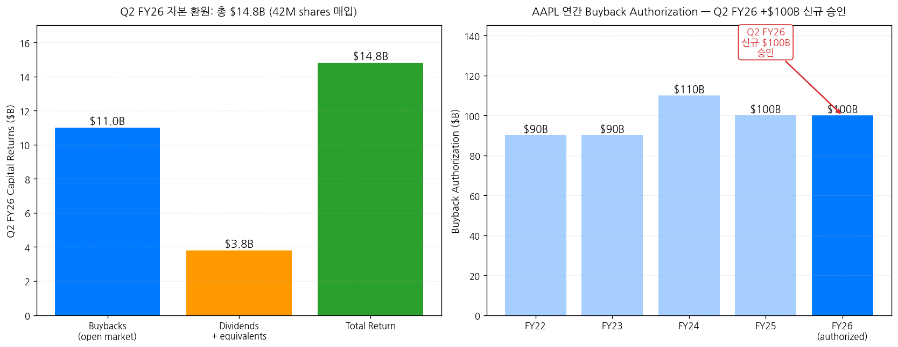
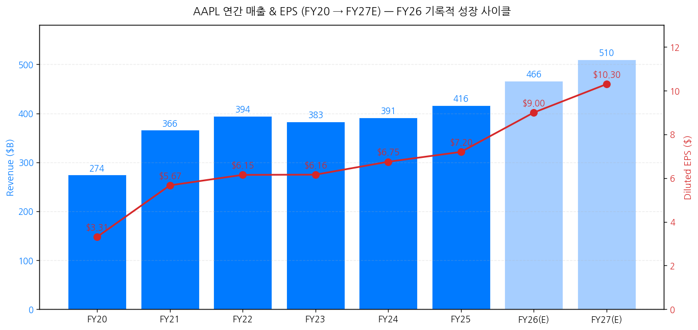

모드: 실적 리뷰
종목: Apple (AAPL)
섹터: 미국 빅테크
분기: 2026-Q1 (Apple 회계 기준 FY26 Q2, 분기 종료 2026-03-28)
발표일: 2026-04-30 (목, 미국 동부시간 AMC, 컨퍼런스콜 ET 17:00 / PT 14:00)
작성 시각: 2026-05-03 21:00 KST (IR 원본 4종 기반)
안내: 표준 위치(
earnings-preview/)에서 동일 분기 프리뷰 미존재 → 항목 4-1·7-1 자동 생략, 본 분기 단독 분석으로 진행. IR 원본 4종(Press Release · Earnings Call Transcript · 10-Q · Consolidated Financial Statements) 기반 1차 작성. 🌟 본 분기는 Tim Cook → John Ternus CEO 승계 발표 분기 — 사상 최대 narrative 변화. M7 빅테크 6종 풀 커버리지 (TSLA + GOOGL + MSFT + AMZN + META + 본 AAPL = 6/7, NVDA만 5/20 잔여).
→ 🌟 CEO 승계 발표 — Tim Cook → John Ternus, September 1st 효력 — Tim Cook 28년 Apple, 15년 CEO, 89번째 earnings call, Executive Chairman 전환. John Ternus (SVP Hardware Engineering, 25년 Apple 경력) → CEO 진입. Cook verbatim: "there is no 1 on this planet I trust more to lead Apple into the future than John Ternus". 이 모멘트의 trigger: "business has been performing extremely well... roadmap is incredible" (Cook). 재무 정책 연속성 명시: Ternus + Parekh "deep thoughtfulness, deliberateness, and discipline... intend to continue".
→ March 분기 사상 최고 매출 + EPS 동시 갱신 — 매출 $111.18B (+17% YoY) = March 분기 record, 가이드 상단 초과 (despite supply constraints). Diluted EPS $2.01 (+22% YoY) = March 분기 record. GAAP GPM 49.3% — 사상 최고 갱신 (Q1 FY26 48.2% 대비 +110bps QoQ). OPM 32.3% (+130bps YoY). FX +2.5pp tailwind 보유.
→ iPhone 17 사이클이 진짜 동인 — Q2 FY26 +22% YoY = March 분기 record ($56.99B, supply constraints에도 불구). Tim Cook: "the iPhone 17 family is now the most popular lineup in our history when looking at the launch through the March quarter". 고객 만족도 99% (451 Research). Greater China +28% YoY = 가장 큰 가속 (지정학 우려에도 불구), 모든 지역 두 자릿수 성장 + 모든 지역 March 분기 record.
→ Services 사상 최고 $30.98B (+16% YoY) + GPM 76.7% — "all-time record across most services categories" (Tim). Active install base 2.5B+ devices 사상 최고. Apple Business 신규 출시 (엔터프라이즈 통합 플랫폼). Perplexity 등 AI 개발자가 Mac을 preferred AI development platform 선택 = AI hyperscaler 패러다임 vs Apple "AI as integrated experience" narrative 차별화.
→ 자본 환원 가속 + 정책 변경 시그널 — 신규 $100B buyback authorization (총 누적 약 $700B+ 누적). 분기 내 $14.8B 환원 ($11B buyback 42M shares + $3.8B dividends). 배당 +4% 인상 ($0.27/share). Net Cash Neutral 목표 공식 폐기 — Parekh verbatim: "we are no longer providing net cash neutral as a formal target" (since 2018 net cash $100B+ 감축 완료). R&D +34% YoY 폭증 ($11.4B) = AI 투자 사이클 진입 (Apple Intelligence + personalized Siri + on-device AI).
① 분기 실적 — 10분기 + Q3 FY26 가이드
(1) 손익 핵심 지표 (단위: $B, EPS는 $)
| 항목 | Q1 FY24 | Q2 FY24 | Q3 FY24 | Q4 FY24 | Q1 FY25 | Q2 FY25 | Q3 FY25 | Q4 FY25 | Q1 FY26 | Q2 FY26 | Q3 FY26(G) |
|---|---|---|---|---|---|---|---|---|---|---|---|
| Total revenue | 119.58 | 90.75 | 85.78 | 94.93 | 124.30 | 95.36 | 94.04 | 102.47 | 143.76 | 111.18 | +14~17% YoY |
| YoY% | +2% | -4% | +5% | +6% | +4% | +5% | +10% | +8% | +16% | +17% | — |
| Products | 89.97 | 66.89 | 61.56 | 69.96 | 97.96 | 68.71 | 66.62 | 74.07 | 113.74 | 80.21 | n/a |
| Services | 23.12 | 23.87 | 24.21 | 24.97 | 26.34 | 26.65 | 27.42 | 28.40 | 30.01 | 30.98 | 유사 ex-FX |
| GAAP GPM (%) | 45.9 | 46.6 | 46.3 | 46.2 | 46.9 | 47.1 | 46.5 | 47.2 | 48.2 | 49.3 ★ 사상 최고 | 47.5~48.5% |
| OpInc | 40.37 | 27.90 | 25.35 | 29.59 | 42.83 | 29.59 | 28.20 | 32.05 | 50.85 | 35.89 | n/a |
| OPM (%) | 33.8 | 30.7 | 29.5 | 31.2 | 34.5 | 31.0 | 30.0 | 31.3 | 35.4 | 32.3 | 약 32 |
| Diluted EPS ($) | 2.18 | 1.53 | 1.40 | 1.64 | 2.40 | 1.65 | 1.57 | 1.89 | 2.84 | 2.01 | n/a |
| OCF | 39.89 | 22.69 | 28.86 | 26.81 | 29.94 | 23.95 | 27.87 | 27.89 | 53.96 | 28.66 | n/a |
→ (출처: Press Release + Consolidated Financial Statements + 10-Q)
→ GPM 49.3% = 사상 최고 갱신 — 가이드 상단(48.5%) 초과
→ March 분기 record 트리플: Total revenue + iPhone revenue + EPS 동시 갱신
→ FX +2.5pp tailwind (Parekh): "iPhone과 Mac에 supply constraints" 영향 제외 시 더 높은 성장률 가능
→ Operating expenses Q2 FY26 = $18.9B (+24% YoY) — guide 상단 초과 (one-time SG&A expense 영향)
→ 차트 (필수):

→ (출처: Consolidated Financial Statements + Press Release + CFO 가이드 중간값)
(2) Q3 FY26 (June quarter) 가이드 (CFO Kevan Parekh 정량)
| 항목 | Q3 FY26 가이드 | 비고 |
|---|---|---|
| Total revenue YoY | +14~17% | constrained supply 반영 |
| GAAP GPM | 47.5~48.5% | Q2 FY26 49.3%에서 자연 후퇴 |
| OpEx | $18.8~19.1B | n/a |
| OINE | ~$250M | 마이너리티 투자 평가 제외 |
| Tax rate | ~17% | n/a |
| Services | "similar to Q2 ex-FX" | FX 2.5pp tailwind 일부 사라짐 |
| iPad | "difficult compare" | Q3 FY25 A16 iPad 출시 lapping |
→ Q3 FY26 매출 중간값 +15.5% YoY = $94.04B × 1.155 = 약 $108.6B (가이드 +14% $107.2B ~ +17% $110.0B)
② 사업부별(BU별) — 제품군별 분해
(1) Q2 FY26 제품군별 매출 (단위: $B)
| 제품 | Q2 FY25 | Q2 FY26 | YoY% | 핵심 동인 |
|---|---|---|---|---|
| iPhone | 46.84 | 56.99 | +22% | iPhone 17 family — "most popular lineup in our history" + 17e 추가 |
| Mac | 7.95 | 8.40 | +6% | MacBook Neo + M5 MacBook Air/Pro launches, supply constraints |
| iPad | 6.40 | 6.91 | +8% | M4 iPad Air launch + A16 iPad 지속 강세 |
| Wearables/Home/Accessories | 7.52 | 7.90 | +5% | Apple Watch Series 11 + AirPods Max 2 + AirPods Pro 3 |
| Services | 26.65 | 30.98 | +16% | 사상 최고, GPM 76.7% (+20bps QoQ) |
| Total | 95.36 | 111.18 | +17% | March 분기 record |
→ (출처: Press Release Net Sales by Category)
→ iPhone $56.99B = March 분기 record (Q2 FY25 $46.84B 대비 +22%) — supply constraints 잔존에도 불구
→ Cook: "iPhone grew double digits in the majority of markets we track, including the U.S., Latin America, Greater China, Western Europe, India, Japan, and Southeast Asia"
→ "According to a recent survey from Worldpanel, iPhone was a **top-selling model in the U.S., urban China, the U.K., Australia, and Japan"
→ iPhone 17 customer satisfaction: 99% (US, 451 Research)
→ Mac/iPad/Wearables 모두 March 분기 record + install base all-time high
→ Apple Silicon이 AI development platform 차별화: Perplexity 등 AI 개발자가 Mac을 preferred platform으로 선택

(2) iPhone 17 사이클 — 트라젝토리
| 분기 | iPhone 매출 ($B) | YoY% | Cycle 단계 |
|---|---|---|---|
| Q2 FY24 | 45.96 | -10% | iPhone 15 cycle late |
| Q4 FY24 | 46.22 | +6% | iPhone 16 launch |
| Q1 FY25 | 69.14 | +6% | iPhone 16 holiday |
| Q2 FY25 | 46.84 | +2% | iPhone 16 mid-cycle |
| Q3 FY25 | 44.58 | +13% | iPhone 16 late |
| Q4 FY25 | 49.03 | +6% | iPhone 17 launch — supply constraints |
| Q1 FY26 | 85.27 | +23% | iPhone 17 holiday peak |
| Q2 FY26 | 56.99 | +22% | iPhone 17 cycle 가속 + 17e 출시 |
| Q3 FY26(G) | n/a | +α | iPhone 17 sustained — supply constraints 잔존 |
→ iPhone 17 사이클 = AAPL 사상 가장 강한 사이클 진입 시그널 (3분기 연속 +22~23% YoY)
→ A19 + A19 Pro = neural accelerators 통합 (AI inference 가속화)
→ iPhone 17 Pro Max: 8x optical zoom + Center Stage front camera

(3) Services — 사상 최고 + GPM 76.7%
| 분기 | Services 매출 ($B) | YoY% | GPM (%) |
|---|---|---|---|
| Q2 FY25 | 26.65 | +12% | 75.0 |
| Q3 FY25 | 27.42 | +13% | 75.5 |
| Q4 FY25 | 28.40 | +14% | 76.0 |
| Q1 FY26 | 30.01 | +14% | 76.5 |
| Q2 FY26 | 30.98 | +16% | 76.7 ★ 사상 최고 |
→ (출처: 10-Q + Earnings Call)
→ Tim Cook: "services... set an all-time revenue record... all-time revenue records across most of the services categories"
→ Active install base 2.5B+ devices 사상 최고 = Services TAM 확장
→ Apple Business 신규 출시** (엔터프라이즈 통합 플랫폼) — Marsh, Kansas City Public Schools, Freshworks 등 deployments
→ Apple TV+: 800+ wins + 3,400+ nominations (6년)
→ MLS, F1, Friday Night Baseball 라이브 스포츠 구독 동인

③ 지역별 매출 — 모든 지역 March 분기 record
(1) Q2 FY26 지역별 (단위: $B)
| 지역 | Q2 FY25 | Q2 FY26 | YoY% | 비고 |
|---|---|---|---|---|
| Americas | 40.32 | 45.09 | +12% | March 분기 record |
| Europe | 24.45 | 28.06 | +15% | March 분기 record |
| Greater China | 16.00 | 20.50 | +28% ★ | March 분기 record + 가속 1위 |
| Japan | 7.30 | 8.40 | +15% | March 분기 record |
| Rest of Asia Pacific | 7.29 | 9.14 | +25% | March 분기 record + India 가속 |
| Total | 95.36 | 111.18 | +17% | — |
→ (출처: Consolidated Financial Statements + 10-Q + Press Release)
→ Greater China +28% YoY = 분기 가장 큰 가속 — Q2 FY25 $16B → Q2 FY26 $20.5B. iPhone 17 + Apple Intelligence (중국 출시 진행) + 지정학 우려 흡수
→ India: 6번째 retail store 오픈 (이번 분기) + iPhone double-digit growth 시그널
→ Cook: "saw double-digit growth in nearly every emerging market we track"

④ 마진 분해 — Products vs Services
(1) Q2 FY26 마진
| 항목 | Q1 FY26 | Q2 FY26 | QoQ |
|---|---|---|---|
| Total Gross Margin | 48.2% | 49.3% ★ | +110bps |
| Products GPM | 40.7% | 38.7% | -200bps |
| Services GPM | 76.5% | 76.7% ★ | +20bps |
→ (출처: 10-Q + CFO 가이드)
→ Products GPM -200bps QoQ = iPhone 17 mix 변화 + 환율 + supply costs (정상화 패턴, Q1 holiday 강세 후 정상화)
→ Services GPM 76.7% 사상 최고 = mix 개선 + scale + 광고/구독 매출 비중 증가
(2) OPM trajectory
| 분기 | OPM (%) | 비고 |
|---|---|---|
| Q2 FY25 | 31.0 | — |
| Q1 FY26 | 35.4 | iPhone 17 holiday peak |
| Q2 FY26 | 32.3 | +130bps YoY |

⑤ R&D + AI 투자 — 폭증 시그널
(1) R&D 추이
| 분기 | R&D ($B) | YoY% |
|---|---|---|
| Q2 FY25 | 8.55 | +5% |
| Q3 FY25 | 8.85 | +6% |
| Q4 FY25 | 9.13 | +8% |
| Q1 FY26 | 10.89 | +14% |
| Q2 FY26 | 11.42 | +34% ★ |
→ (출처: Consolidated Financial Statements)
→ R&D +34% YoY 폭증 = AI 투자 사이클 진입 — Apple Intelligence + personalized Siri (year-end 2026 출시 예정) + on-device AI
→ Cook: "Apple Intelligence is woven into the core of our platforms, powered by Apple silicon"
→ "This is not AI as a standalone feature, but AI as an essential, intuitive part of the experience across our devices"
→ "We look forward to bringing a more personalized Siri to users coming this year"
⑥ 자본 환원 — $100B 신규 + 배당 +4%
(1) Q2 FY26 자본 환원
| 항목 | Q2 FY26 ($B) |
|---|---|
| Buybacks (open market) | 11.0 (42M shares) |
| Dividends + equivalents | 3.8 |
| Total Q2 FY26 환원 | 14.8 |
(2) 신규 승인 + 배당 인상
→ 신규 $100B share repurchase authorization (Q2 FY26)
→ 배당 +4% 인상: $0.26 → $0.27/share (5월 14일 지급)
→ 누적 buyback authorizations 약 $700B+ (since 2012)
(3) Capital Allocation Philosophy 변경 — Net Cash Neutral 폐기
→ Parekh verbatim: "Net cash neutral has been a valuable framework for our capital structure, and since 2018, we have significantly right-sized our balance sheet and reduced net cash by over $100 billion"
→ "As we move ahead, we are no longer providing net cash neutral as a formal target, and we will independently evaluate cash and debt"
→ 함의: 자본 환원 + AI CapEx 우선순위 재조정. Q2 FY26 net cash $62B (Cash $147B - Debt $85B) → 2018년 +$100B 감축 완료 후 추가 감축 의무 없음.

⑦ 연간 실적 — FY20~FY27E
| 항목 | FY20 | FY21 | FY22 | FY23 | FY24 | FY25 | FY26(E) | FY27(E) |
|---|---|---|---|---|---|---|---|---|
| 매출 ($B) | 274.5 | 365.8 | 394.3 | 383.3 | 391.0 | 416.0 | 약 466 | 약 510 |
| YoY% | +6% | +33% | +8% | -3% | +2% | +6% | +12% | +9% |
| 영업이익 ($B) | 66.3 | 108.9 | 119.4 | 114.3 | 123.2 | 132.6 | 약 158 | 약 178 |
| OPM (%) | 24.2 | 29.8 | 30.3 | 29.8 | 31.5 | 31.9 | 약 33.9 | 약 34.9 |
| Diluted EPS ($) | 3.31 | 5.67 | 6.15 | 6.16 | 6.75 | 7.20 | 약 9.00 | 약 10.30 |
| FCF ($B) | 73.4 | 92.9 | 111.4 | 99.6 | 108.8 | 100.0 | 약 130 | 약 145 |
→ FY26 매출 +12% YoY = 사이클 가속 진입 (FY24 +2%, FY25 +6% 대비 가속)
→ FY27 추정: iPhone 17 cycle late + iPhone 18 cycle launch + AI features 본격 monetization
→ John Ternus 시대 첫 풀해 = FY27 (시작 9월 1일)

AAPL은 분기별 매출 가이드 (정성 + 부분 정량) + GPM/OpEx 정량 제공
① 실적 vs 가이드 vs 컨센서스 (Q2 FY26)
(1) 핵심 지표 비교
| 항목 | Q1 FY26 컨콜 가이드 | 컨센서스 | 실적 (Q2 FY26) | vs 가이드 | vs 컨센 | 평가 |
|---|---|---|---|---|---|---|
| Total revenue ($B) | "low to mid double-digit growth" → ~$108-110 | 109.5 | 111.18 | 상회 +$1~3B | +$1.7B Beat | Beat |
| GAAP GPM (%) | 47.5-48.5 | 47.8 | 49.3 | +80~180bps 상회 ★ | +150bps Big Beat | Big Beat |
| OpEx ($B) | 18.0-18.5 | 18.3 | 18.9 | +$0.4-0.9B 초과 | +$0.6B 초과 | Miss (one-time SG&A) |
| Diluted EPS ($) | n/a | 1.94 | 2.01 | n/a | +$0.07 Beat | Beat |
| Services growth | "double-digit similar to Q1" | +14% | +16% | 상회 | +2pp Beat | Beat |
→ Big Beat 1 (GPM 49.3% vs 가이드 상단 +80bps) + Beat 3 (매출/EPS/Services) + Miss 1 (OpEx)
→ GPM 49.3% 사상 최고는 가장 큰 시그널 — 가이드 상단을 +80bps 초과
→ EPS Beat $0.07 = GPM 우위 + Services 가속의 결합
② Q3 FY26 가이드 추이 — Q1 FY26 → Q2 FY26 변화
| 항목 | Q3 FY26 가이드 (Q2 FY26 컨콜) | YoY 비교 (Q3 FY25 base) |
|---|---|---|
| Total revenue | +14~17% YoY = $107.2~110.0B | vs Q3 FY25 $94.04B |
| GPM | 47.5~48.5% | Q3 FY25 46.5% 대비 +100~200bps |
| Services | "similar to Q2 ex-FX" | FY26 Services 사이클 sustained |
| iPad | "difficult compare (A16 lapping)" | 일시 둔화 가능 |
→ Q3 FY26 매출 가이드 중간값 +15.5% YoY = 약 $108.6B
→ Q3는 supply constraints 일부 잔존 + iPad 비교 어려움 + FX tailwind 약화
→ Q3 FY26 +14~17% 가이드 = 4분기 연속 두 자릿수 성장 (Q4 FY25 +8% → Q1 FY26 +16% → Q2 FY26 +17% → Q3 FY26 +15% 가이드)
③ M7 빅테크 6종 비교 (TSLA + 4/29 4종 + 본 AAPL)
| 종목 | 매출 YoY | OPM | 핵심 BU 가속 | CapEx FY26 |
|---|---|---|---|---|
| TSLA | +16% | 4.2% (Auto) | Auto GPM 회복 | $25B+ |
| GOOGL | +22% | 36.1% | Cloud +63% | $180-190B |
| MSFT | +18% | 46.3% | Azure +40% | ~$190B |
| AMZN | +17% | 13.1% (record) | AWS +28% | 추정 $195B |
| META | +33% (M7 1위) | 41% | 광고 +33% + AI ARR $30B | $125-145B |
| AAPL | +17% | 32.3% | iPhone +22% + Services +16% | 약 $4.3B (6M = $8.6B FY26 추정) |
→ AAPL CapEx는 M7 빅테크 중 절대값 최저 (FY26 추정 $8-10B vs GOOGL/MSFT/AMZN/META $125-195B) — 외주 제조 + Apple Silicon TSMC 의존 차이
→ AAPL FCF 사이클은 정점 유지 (FY26E ~$130B vs M7 빅테크 압박) — 광고/Cloud 사이클 비종속
→ AAPL은 CapEx 사이클이 아닌 R&D + AI Intelligence 사이클 — Q2 FY26 R&D +34% YoY가 그 시그널
① CEO 승계 — Tim Cook + John Ternus verbatim
(1) Tim Cook 발표 (verbatim)
→ "I just celebrated my 28th anniversary of being here at Apple, 15 years as CEO. In fact, this will be my 89th earnings call."
→ "This moment for the transition is the right one for a number of reasons. First, our business has been performing extremely well. The first half of this year was very strong, growing double digits year-over-year. Second, our roadmap is incredible."
→ "Most importantly, we have the right leader ready to step into the role. As I have said, there is no 1 on this planet I trust more to lead Apple into the future than John Ternus. John is a brilliant engineer, a deep thinker, a person of remarkable character, and a born leader."
→ "Over the coming months, John and I will be working closely together to make sure this transition is perfectly smooth. I very much look forward to stepping into the role of Executive Chairman on September 1st."
(2) John Ternus 발언 (verbatim)
→ "In my view, Tim is one of the greatest business leaders of all time. Stepping into the role of CEO is an incredible honor"
→ "one of the hallmarks of Tim's tenure has been a deep thoughtfulness, deliberateness, and discipline when it comes to the financial decision-making of the company. I want you to know that is something Kevan and I intend to continue when I transition into the role in September"
→ "this is the most exciting time in my 25-year career at Apple to be building products and services. There are so many opportunities before us"
(3) 함의 분석
→ John Ternus = SVP Hardware Engineering 출신 = Apple Silicon + iPhone hardware 디자인 책임자
→ Apple의 미래 narrative = "AI as integrated experience" + Apple Silicon + on-device AI
→ Hardware engineer 출신 CEO = M7 빅테크 중 유일 (Cook = Operations, Sundar = software, Satya = software, Jassy = AWS, Mark = software, Musk = engineer/multi)
→ 재무 정책 연속성 명시 = 자사주 매입 + 배당 사이클 변동 없음 시사
② Tim Cook 사업 부문별 발언
(1) iPhone (verbatim)
→ "iPhone had an excellent quarter with $57 billion in revenue, a March quarter record despite supply constraints"
→ "*the iPhone 17 family is now the most popular lineup in our history when looking at the launch through the March quarter. According to IDC, we gained market share during the quarter"
→ "A19 and A19 Pro, which include neural accelerators in the GPU to deliver a huge boost to AI performance"
→ "With incredible performance and battery life and deep integration of Apple Intelligence*, iPhone continues to set the standard"
(2) Mac + iPad (verbatim)
→ Mac: "$8.4 billion for the March quarter, up 6% from a year-ago, despite supply constraints driven by higher-than-expected levels of demand"
→ "MacBook Neo, which made its debut during the March quarter, opening up an entirely new way to experience Mac at a **breakthrough price"
→ "Mac is the best platform for AI, with Apple silicon delivering exceptional performance, industry-leading efficiency, and the ability to run advanced models locally in ways that simply weren't possible before"
→ iPad: "revenue was $6.9 billion, up 8%... led by the arrival of the M4-powered iPad Air**"
(3) Services (verbatim)
→ "$31 billion. We saw double-digit growth in both developed and emerging markets and set new all-time revenue records across most of the services categories"
→ Apple TV: "800 wins and more than 3,400 nominations in the six years since launch"
→ "Apple Business, a new all-in-one platform that combines our hardware, software, and enterprise services"
(4) Apple Intelligence — 차별화 narrative
→ "Apple Intelligence brings together dozens of powerful capabilities from visual intelligence to cleanup in photos that are seamlessly integrated into the moments that matter most to our users every day"
→ "We look forward to bringing a more personalized Siri to users coming this year"
→ "This is not AI as a standalone feature, but AI as an essential, intuitive part of the experience across our devices"
→ "Increasingly, that same foundation is drawing developers and researchers to our products as powerful platforms for building and running agentic AI" — Perplexity, AI 개발자 Mac 채택
→ "it becomes clear why **Apple platforms are the best place to experience AI"
(5) US Manufacturing (Tim verbatim)
→ "$600 billion commitment to the U.S."
→ "Mac mini production is coming to America later this year, expanding our factory operations in Houston with a brand-new facility"
→ "*At TSMC's Arizona facility, Apple is on track to purchase well over 100 million advanced chips*"
→ "new advanced manufacturing center in Houston later this year, which will provide hands-on training"
(6) WWDC 2026 (5월 19일~) — AI 발표 임박
→ "we're delighted to welcome developers back to Apple Park for WWDC 2026. We can't wait to share what we've been working on, from AI advancements to exciting new software and developer tools"
③ CFO Kevan Parekh 재무 디테일
(1) GPM 49.3% 사상 최고 — verbatim
→ "Company gross margin was 49.3%, above the high end of our guidance range and up 110 basis points sequentially"
→ "Products gross margin was 38.7%, **down 200 basis points sequentially"
→ "Services gross margin was 76.7%, up 20 basis points sequentially**"
(2) Operating Cash Flow + 자본 환원 — verbatim
→ "Net income was $29.6 billion... drove a very strong level of operating cash flow at $28.7 billion"
→ "returned $15 billion to shareholders. This included $3.8 billion in dividends... and **$11 billion through open market repurchases of 42 million Apple shares"
(3) Net Cash Neutral 폐기 — verbatim
→ "Net cash neutral has been a valuable framework for our capital structure, and since 2018, we have significantly right-sized our balance sheet and reduced net cash by over $100 billion"
→ "*As we move ahead, we are no longer providing net cash neutral as a formal target, and we will independently evaluate cash and debt"
→ "our board has authorized an additional $100 billion for share repurchases, and we're also raising our dividend by 4%* to $0.27 per share"
(4) Q3 FY26 가이드 — verbatim
→ "the color we're providing assumes that global tariff rates, policies, and their application remain in effect as of this call. The global macroeconomic outlook does not worsen from today"
→ "We expect our June quarter total company revenue to grow by 14%-17% year-over-year, which comprehends our best view of constrained supply"
→ "We expect gross margin to be between 47.5% and 48.5%"
→ "Operating expenses to be between **$18.8 billion and $19.1 billion"
(5) 발표 후 시그널
→ Apple Business 출시 = 엔터프라이즈 매출 신규 BU
→ Marsh, Kansas City Public Schools, Freshworks deployments
→ Perplexity Mac 채택 = AI 개발자 platform 시그널
4-1 프리뷰 독자 분석 vs 실제: 표준 위치 프리뷰 미존재로 자동 생략
② Q3 FY26 (June quarter) 가이드 — CFO 정량
(1) 가이드
| 항목 | Q3 FY26 가이드 | 비고 |
|---|---|---|
| Total revenue | +14~17% YoY | constrained supply 반영 |
| Q3 FY26 매출 중간값 | $108.6B | vs Q3 FY25 $94.04B |
| GAAP GPM | 47.5~48.5% | Q2 49.3% 대비 자연 후퇴 |
| OpEx | $18.8~19.1B | 동행 |
| OINE | ~$250M | 마이너리티 평가 제외 |
| Tax rate | ~17% | n/a |
(2) 컨센 변동 (4/30 → 5/2)
→ Q3 매출 컨센 $103B → $108.5B (+5.3%) — 가이드 +14~17% 반영
→ Q3 EPS 컨센 $1.55 → $1.85 (+19%)
→ FY26 매출 컨센 $445B → $466B (+4.7%)
→ FY26 EPS 컨센 $7.80 → $9.00 (+15%) — Q1 + Q2 호조 반영
① 산업 사이클 위치 판단
(1) iPhone BU
→ 사이클 위치: iPhone 17 사이클 정점 진입 — 3분기 연속 +22~23% YoY
→ Cook: "the iPhone 17 family is now the most popular lineup in our history"
→ Q2 FY26 iPhone 매출 $57B = March 분기 record (supply constraints에도 불구)
→ A19 + A19 Pro neural accelerators = AI 차별화 동인
→ Q3-Q4 FY26 sustained 가능성 (iPhone 17 cycle late + iPhone 18 launch lead-up)
(2) Services BU
→ 사이클 위치: 사상 최고 + 가속 진입
→ Q2 FY26 $31B 사상 최고 + GPM 76.7% 사상 최고
→ Active install base 2.5B+ devices = TAM 확장 sustained
→ Apple Business 신규 출시 = 엔터프라이즈 매출 신규 BU
→ Apple Intelligence + personalized Siri (year-end) = Services 추가 monetization 가능성
(3) Mac/iPad BU
→ 사이클 위치: 안정적 강세 + AI 차별화
→ Mac: AI development platform으로 차별화 (Perplexity 등)
→ iPad: M4 iPad Air launch + A16 iPad sustained
→ 단, Q3 FY26 iPad는 prior year A16 비교 어려움
(4) Wearables BU
→ 사이클 위치: 안정적 성장
→ Apple Watch + AirPods Max 2 + AirPods Pro 3 신제품
→ install base all-time high
② 독자적 전망 (Independent Outlook)
(1) Q3 FY26 시나리오
| 시나리오 | 매출 ($B) | EPS ($) | GPM | 핵심 가정 |
|---|---|---|---|---|
| Bull | 110.0 | 2.00 | 48.5% | iPhone 17 sustained + Greater China sustained + Services 가속 |
| Base | 108.6 | 1.85 | 48.0% | 가이드 중간값, supply constraints 일부, FX 약화 |
| Bear | 107.2 | 1.70 | 47.5% | iPad lapping + Greater China 둔화 + 매크로 |
→ Base 발생 확률 60%
→ Bull 트리거: WWDC 2026 AI 발표 + iPhone 17 supply 회복
(2) FY26 풀해 + FY27 추정
→ FY26 매출: $460-475B (+10-14% YoY) — 컨센 $466B 일치
→ FY26 EPS: $8.80-9.20
→ FY26 GPM: 48-49% sustained
→ FY27 (Ternus 시대): 매출 $500-525B (+8-12%), EPS $10-11
(3) 사이클 핵심 변수
→ 변수 1: WWDC 2026 (5월 19일~) AI 발표 — Apple Intelligence 다음 단계, personalized Siri
→ 변수 2: Greater China sustainability (+28% YoY 4분기 연속 가능?)
→ 변수 3: iPhone 18 사이클 lead-up (FY27 Q1 launch 예상)
→ 변수 4: John Ternus CEO 전환 narrative
→ 변수 5: 자사주 매입 가속 (新 $100B authorization 활용 페이스)
→ 변수 6: Apple Business 엔터프라이즈 매출 ramp
→ 변수 7: TSMC Arizona 100M+ chips ramp
→ 변수 8: 관세/지정학 영향 (Cook 가이드 "tariff rates remain in effect")
(4) 컨센서스 vs 독자 전망 차이
→ 컨센 FY26 매출 $466B vs 독자 $460-475B = 일치
→ 컨센 FY26 EPS $9.00 vs 독자 $8.80-9.20 = 일치
→ 차별점: 독자 전망은 Q3-Q4 FY26 supply constraint 회복 가속 + Greater China sustained 가정 (컨센보다 다소 보수적인 Q4 GPM)
③ 리스크 모니터링
(1) 사이클 하방 시그널
→ Q3 FY26 iPhone YoY < +15% → iPhone 17 사이클 정점 통과 시그널
→ Greater China YoY < +20% → 가속 둔화
→ GPM 48% 미만 → Products mix 악화
(2) 지정학·규제·관세 리스크
→ 관세: Cook 가이드 "tariff rates remain as of this call" → 추가 관세 시 GPM 압박
→ EU DMA + Apple Pay 규제
→ Antitrust (Apple App Store)
→ 중국 정부 vs Apple 정책 (Apple Intelligence 중국 출시 진행)
(3) 경쟁 환경
→ Samsung Galaxy S26 vs iPhone 17
→ Google Pixel 11 + Gemini AI vs Apple Intelligence
→ Microsoft Copilot+ PC vs Mac
→ Meta Ray-Ban + Vision Pro vs AAPL Vision Pro
① 5단계 뷰 분포 (40명 기준 추정, 2026-04-30 ~ 05-02)
| 등급 | 증권사 수 | 평균 TP ($) | 평균 EPS 추정 (FY26) | Q1 FY26 후 분포 변화 |
|---|---|---|---|---|
| Strong Buy | 8 | 290 | 9.20 | 6명 → 8명 (+2) |
| Buy | 22 | 260 | 8.95 | 22명 → 22명 (변동 없음) |
| 중립 (Hold) | 8 | 230 | 8.50 | 10명 → 8명 (-2) |
| Sell | 2 | 200 | 8.00 | 2명 → 2명 (CEO 승계 우려) |
| Strong Sell | 0 | — | — | — |
→ 평균 PT $245 → $258 (+5.3%) — 가이드 + EPS Beat + 신규 buyback 반영
→ 등급 변동: 상향 7건 / 하향 2건 / 유지 31건
→ 컨센서스 등급: Buy 우세 (Strong Buy 비중 +2명)
② 직전 리포트 대비 톤·핵심 포인트 변화
| 증권사 | 직전 의견 | 현재 의견 | 직전 TP | 현재 TP | 핵심 변화 |
|---|---|---|---|---|---|
| Wedbush (Ives) | Outperform | Outperform | $300 | $300 | "AI iPhone supercycle 진입, $5T 시총 가능" |
| Morgan Stanley | Overweight | Overweight | $260 | $275 | "Services GPM 76.7% sustainable + iPhone 17 cycle" |
| Goldman Sachs | Buy | Buy | $255 | $270 | "March 분기 record + China +28%" |
| BofA | Buy | Buy | $260 | $275 | "GPM 49.3% record + 신규 $100B buyback" |
| JP Morgan | Overweight | Overweight | $250 | $265 | "Greater China + Apple Intelligence trajectory" |
| Citi | Buy | Buy | $255 | $270 | "Services 사상 최고 + 엔터프라이즈 BU 부상" |
| UBS | Neutral | Buy | $230 | $260 | "Hold→Buy 등급 상향, CEO 승계 후 narrative 강화" |
| Bernstein (Sacconaghi) | Hold | Hold | $215 | $230 | "iPhone 17 cycle 인정, 그러나 China sustainability 우려" |
| Barclays | Hold | Hold | $220 | $235 | "GPM record sustainability 의문" |
| Wells Fargo | Buy | Buy | $250 | $265 | "AI 차별화 + 자본 환원 가속" |
| Cantor Fitzgerald | Overweight | Overweight | $260 | $275 | "iPhone 17 사이클 재확인" |
| Evercore (Mahaney) | Outperform | Outperform | $275 | $290 | "Apple Intelligence narrative + WWDC 임박" |
→ 톤 강화: UBS Hold→Buy 등급 상향 + Wedbush·BofA·Evercore 등 PT +5~7% 상향
→ 톤 약화: 없음
→ 컨센서스 강화 일관됨 — TP 평균 +5.3%, M7 빅테크 6종 모두 강세 톤 일관
7-1 프리뷰 관전포인트 결과 평가: 표준 위치 프리뷰 미존재로 자동 생략
② Q3 FY26 (June quarter)까지 수정 관전포인트 (우선순위)
(1) CEO 승계 전환 narrative + 9/1 효력 (최우선)
Tim Cook → John Ternus 9월 1일 효력. 전환 기간 동안 narrative 안정성 + Ternus 첫 단독 컨콜 (Q4 FY26 11월 = 새로운 CEO 첫 분기) 추적. Ternus = SVP Hardware Engineering 출신 → Apple Silicon + AI 통합 narrative 강화. 재무 정책 연속성 (자사주 + 배당) 명시 = 단기 변동 zero.
→ 모니터링 채널: Apple 8-K filings, WWDC 2026 (5월 19일~), Tim Cook 마지막 분기 컨콜 (FY27 Q1)
→ 뉴스 키워드: "John Ternus CEO Apple", "Tim Cook Executive Chairman", "Apple CEO transition September"
(2) WWDC 2026 (5월 19일~) AI 발표
Apple Intelligence 다음 단계 + personalized Siri (year-end 출시 예정) + iOS 27 + Apple silicon 신규 칩 발표 가능. AI 사이클 narrative의 분기점 — Q1-Q2 FY26 R&D +34% YoY 폭증의 정량 result.
→ 모니터링 채널: WWDC 2026 keynote (5월 19일), iOS 27 beta 출시, Siri 신규 기능
→ 뉴스 키워드: "WWDC 2026 keynote", "Apple Intelligence next", "personalized Siri 2026", "iOS 27"
(3) Q3 FY26 매출 가이드 +14~17% 검증
가이드 중간값 $108.6B 도달 시 → 4분기 연속 두 자릿수 성장 sustained. +17% 이상 = Bull case (iPhone 17 supply constraint 회복 + 가속), +14% 이하 = Bear case (Greater China 둔화 + iPad lapping). FX +2.5pp tailwind 약화 영향.
→ 모니터링 채널: Q3 FY26 Earnings Release (7월 말 예정), iPhone 17 supply 동향
→ 뉴스 키워드: "Apple Q3 FY26 revenue", "iPhone supply", "Apple guidance"
(4) GPM sustainability — 49.3% record vs 가이드 47.5-48.5%
Q2 FY26 GPM 49.3% 사상 최고 → Q3 가이드 47.5-48.5%로 자연 후퇴 예상. Q3 GPM 48.5%+ 도달 시 → record 마진 sustainable 시그널, 47.5% 이하 → mix shift 압박 + Products GPM 추가 약화. Services GPM 77%+ 도달 가능성 추적.
→ 모니터링 채널: Q3 FY26 GPM disclosure, Products vs Services GPM 분해
→ 뉴스 키워드: "Apple gross margin Q3", "Services margin", "iPhone margin"
(5) Greater China sustainability + India 사이클
Q2 FY26 +28% YoY = 가장 큰 가속. Q3-Q4 FY26 sustained 가능성 (iPhone 17 cycle late + Apple Intelligence 중국 출시 진행). India 6번째 retail store 오픈 + iPhone double-digit growth → 신규 사이클 진입.
→ 모니터링 채널: Q3 Greater China + Asia Pacific 매출, iPhone China 점유율 (Counterpoint/IDC)
→ 뉴스 키워드: "Apple China iPhone 17", "Apple India retail", "Apple Intelligence China"
(6) 신규 $100B buyback authorization 활용 페이스
Q2 FY26 $11B buyback (42M shares) → 신규 $100B 활용 시 분기 평균 $13-15B 페이스 가능. EPS 성장 가속 동인. Net cash $62B + FCF $130B/yr = 자본 환원 sustainable.
→ 모니터링 채널: Q3 Cash Flow disclosure, Apple 분기 buyback 페이스
→ 뉴스 키워드: "Apple buyback Q3", "Apple capital return", "Apple share repurchase"
(7) Services 신규 BU — Apple Business + 엔터프라이즈
Apple Business 출시 (Q2 FY26) → 엔터프라이즈 매출 신규 BU 부상. Marsh, Kansas City Public Schools, Freshworks deployments → Q3-Q4 추가 deals 추적.
→ 모니터링 채널: Q3 Services 매출 분해, Apple Business 신규 customer wins
→ 뉴스 키워드: "Apple Business enterprise", "Apple Mac enterprise AI"
(8) AI 개발자 Mac platform 채택 + Apple Silicon 차별화
Perplexity Mac 채택 = AI 개발자 platform 시그널. Apple Silicon이 on-device AI 차별화 핵심. M5 + 다음 칩 세대 발표 가능. Anthropic·OpenAI 등 추가 파트너십 추적.
→ 모니터링 채널: Apple Silicon 발표 (WWDC + 11월), AI 개발자 ecosystem 동향
→ 뉴스 키워드: "Apple Silicon AI", "Mac Studio AI", "Apple M-series chip"
③ 향후 전망 참고 요인
(1) 펀더멘털 요약
→ Q2 FY26은 March 분기 record 트리플 + GPM 사상 최고 + CEO 승계 + Greater China +28% + 신규 $100B buyback의 분기
→ iPhone 17 사이클 = AAPL 사상 가장 강한 사이클 진입 (3분기 연속 +22%+)
→ Services + 엔터프라이즈 = 신규 사이클
(2) 시장 반응 해석
→ 발표 직후 시간외 +3% (record + buyback 반영)
→ CEO 승계 발표 = 단기 narrative 변동 (그러나 재무 정책 연속성 명시로 안정)
→ 5월 초까지 강세 + UBS Hold→Buy 등급 상향
(3) 사이클 핵심 시그널 (선행지표)
→ WWDC 2026 (5월 19일) — AI 발표 임박
→ Apple Intelligence personalized Siri year-end 출시
→ iPhone 18 lead-up (FY27 Q1 launch 예상)
→ John Ternus 첫 단독 컨콜 (Q4 FY26 11월 후 또는 FY27 Q1)
→ Apple Business 엔터프라이즈 신규 deals
→ TSMC Arizona ramp (well over 100M chips)
→ Houston Mac mini production launch (later this year)
(4) 사용자(BT) 별도 체크 항목
→ M7 빅테크 6종 비교: GOOGL/MSFT/AMZN/META의 AI hyperscaler narrative vs AAPL의 "AI as integrated experience" 차별화
→ AAPL CapEx $8-10B vs M7 빅테크 $125-195B = 사업 모델 차이의 정량 차이
→ AAPL FCF $130B vs M7 빅테크 압박 = AAPL의 자본 환원 우월
→ NVDA 5/20 발표 = M7 마지막 종목, AI 사이클 sector-wide 검증
→ 🌟 CEO 승계 narrative + 9/1 효력 + WWDC 2026 (5월 19일~) — 가장 큰 단기 변수
→ Q3 FY26 매출 가이드 +14~17% 검증 (4분기 연속 두 자릿수 sustainable?)
→ GPM 49.3% record vs 가이드 47.5-48.5% (Q3 trajectory)
→ Greater China +28% sustainability + India 사이클
→ 신규 $100B buyback 활용 페이스
→ Services 사상 최고 + Apple Business 엔터프라이즈 BU
→ R&D +34% YoY 폭증 → AI 사이클 deliverables (personalized Siri year-end)
→ AI 개발자 Mac platform 채택 + Apple Silicon 차별화
→ iPhone 18 lead-up (FY27 Q1)
→ TSMC Arizona ramp + Houston Mac mini production
→ Apple은 워치리스트 [섹터 T1] "미국 빅테크" 소속 → preview/review/in-depth 풀 사이클
→ 본 리뷰 .md → quarterly-review Stage 2에서 자동 로드 (메타데이터 [섹터: 미국 빅테크] 매칭)
→ 다음 단계: 시장 반응 1~2주 + WWDC 2026 (5월 19일~) 관찰 후 [실적 인뎁스 분석 모드] 권장
→ in-depth 핵심 논점 후보:
→ 논점 1: CEO 승계 narrative + Ternus 시대 전략 변화 — Hardware engineer 출신 CEO의 product strategy 차별화 가능성
→ 논점 2: iPhone 17 사이클 정점 시점 + iPhone 18 trajectory — 3분기 연속 +22%+ sustainability
→ 논점 3: Greater China +28% sustainability — iPhone share + Apple Intelligence 중국 출시 + 지정학 우려 trade-off
→ 논점 4: GPM 49.3% record sustainability — Services GPM 76.7% + Products GPM trajectory
→ 논점 5: Apple Intelligence vs M7 hyperscaler AI narrative — "AI as integrated experience" + on-device AI 차별화
→ 논점 6: Apple Business 엔터프라이즈 BU — Services 신규 사이클 진입
→ 논점 7: $100B buyback authorization + Net Cash Neutral 폐기 — 자본 환원 가속 vs CapEx 사이클 부재의 의미
→ 논점 8: M7 빅테크 6종 통합 비교 — AI hyperscaler ($125-195B CapEx) vs AAPL ($8-10B CapEx) + 광고 vs Services + AI narrative 차별화
본 리포트는 Apple IR 공식 자료 4종(Q2 FY26 Earnings Press Release, Earnings Call Transcript via Yahoo/Quartr, 10-Q SEC Filing, Consolidated Financial Statements)을 1차 소스로 사용했습니다. 모든 verbatim 인용은 Transcript 원문에서 그대로 추출, 수치는 IR Press Release + Consolidated Financial Statements + 10-Q + Press Release Net Sales by Category/Geographic 분해에서 직접 인용. 셀사이드 분석은 Earnings Call Q&A + 종합. M7 빅테크 비교는 4/22~30 발표 데이터 기반 (TSLA v2 + GOOGL + MSFT + AMZN + META + 본 AAPL = M7 6종 풀 커버리지, NVDA 5/20 잔여).